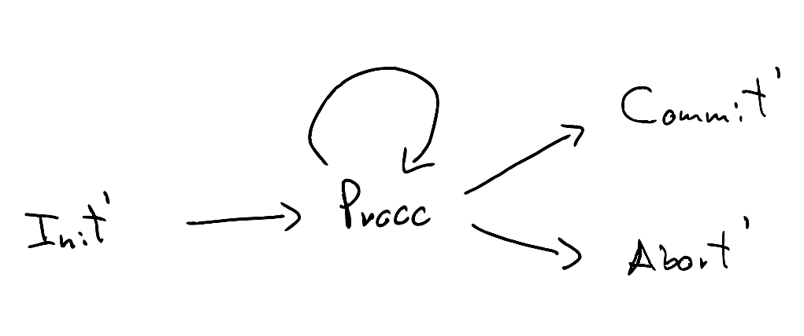

This note defines a notion of similarity for labelled-transition systems (LTS) and shows how, by placing certain finiteness conditions on the LTS, similarity can be iteratively computed. In the process, we will see how similarity can be a concrete example of the trick for "commuting quantifiers" described in Amin Timany's blog. None of what follows is novel, and is sourced from Davide Sangiorgi's excellent introduction to coinduction and bisimulation.
A labelled-transition system is a triple \((Pr, Act, \rightarrow)\), where \(Pr\) is the set of processes (states), \(Act\) is a set of actions (labels), and \( \rightarrow \subseteq Pr \times Act \times Pr \) is the transition relation. We will write \( P \rightarrow_{\mu} Q \) for \( (P, \mu, Q) \).
A simulation is a relation \( R \subseteq Pr \times Pr \) such that if \( (P, Q) \in R \), then for all \( P' \) such that \( P \rightarrow_{\mu} P' \), there exists a \( Q' \) such that \( Q \rightarrow_{\mu} Q' \) and \( (P', Q') \in R \).
Similarity, denoted by \( \le \), is the union of all simulations. When \( P \le Q \) we say that \( Q \) simulates \( P \) (note the order is reversed). For example, the following LTS models a two-phase commit protocol with two clients, while keeping track of which clients have committed (C) or aborted (A). The transitions are unlabelled because we have only one action (e.g. \( \mu \)):
If we want to model the protocol at a higher level, we can decide to not keep track of the client state:
We then need a way to relate the two models: we can use similarity to that effect. We can see that \( Init \le Init' \), all the C and A states are simulated by Procc, \( Commit \le Commit' \), and \( Abort \le Abort' \). For example, the sequence \( [Init, C_1, A_2, Abort] \) is simulated by \( [Init', Procc, Procc, Abort'] \).
Working on the complete powerset lattice \( \mathcal{P}(Procc \times Procc) \), we can obtain similarity as the greatest fixpoint of a functional
\( F : \mathcal{P}({Procc \times Procc}) \rightarrow \mathcal{P}({Procc \times Procc}) \) given by
The intuition for \( F \) is that it gives us all pairs \( (P, Q) \) where \( Q \) can simulate \( P \) for one step and after that one step we end up in a pair of states in \( R \).
\[ F(R) = \{ (P, Q) | \forall P', P \rightarrow_\mu P' \implies \exists Q', Q \rightarrow_\mu Q' \land (P', Q') \in R \} \]
Fact 1. \( R \) is a simulation iff \( R \) is a post-fixpoint of \( F \) (i.e. \( R \subseteq F(R) \) ).
Corollary 2. similarity is F's greatest fixpoint (follows by Knaster-Tarski).
Moreover, we can stratify similarity through a family of relations \( \{ \le_n \} \) capturing similarity up to \(n\) steps:
- \( \le_0 = Pr \times Pr \)
- \( \le_{n + 1} = F(\le_n) \)
To compute similarity, we'd like to know that \( P \le Q \) iff \( P \le_n Q \) for all n; i.e. $$ \le = \bigcap_{i \ge 0} \le_i $$ If so, we could compute \( \le_0, \le_1, \ldots, \le_n, \ldots \) Since \( F \) is monotone, if at any point we reach a fixpoint \( \le_n = F(\le_{n}) = \le_{n + 1} \), then we know that $$ \bigcap_{i \ge 0} \le_i = \le_n $$